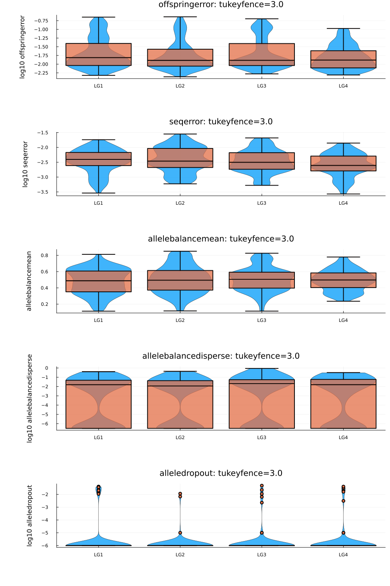

S5 MagicImpute
MagicImpute
magicmask_imputecombinesmagicmask,magicimpute, andimputeaccuracy.- By default,
magicmaskmasks 10% genotypes (foundermask=0.1,offspringmask=0.1). For sequence data, mask only genotypes with read depth >= minread (minread=10). - Use
magicimputewithout masking genotypes.
The magicimpute first imputes founders and then imputes offspring. During the iterative founder imputation, it simultaneously performs the following:
- Impute founder genotypes.
- Delete markers that do not fit in. By default,
isdelmarker = true. - Correct founder genotypes. By default,
iscorrectfounder = trueifmodel="depmodel"or offspring do not have genotypes in AD format`. - Infer marker-specific error rates. By default,
isinfererror = trueif model is not "depmodel" orisspacemarker = true. - Refine local marker ordering. By default,
isordermarker = trueifmapfileis not nothing. - Refine inter-marker distances. By default,
isspacemarker = trueifmapfileis not nothing orisordermarker = trueorisphysmap=true.
After founder imputation, magicimpute imputes offspring.
- If
phasealg=forwardbackward, for each offspring at each marker, the posterior diplotype probabilities (in format GP) corresponding to the phased genotypes0|0,0|1,1|0and1|1are caculated according to the forward backward algorithm, and the called phased genotypes (in format GT) are given by those with the largest posterior diplotype probabilities if they are greater thanthreshimpute. - If
phaselag=viterbi(default), the posterior diplotype probabilities (GP) are set as those ofphasealg=forwardbackward, and the called phased genotypes (GT) are calculated according to the Viterbi algorithm. - If
phaselag=unphase, the posterior genotype probabilities (GP) corresponding to the unphased genotypes0/0,0/1, and1/1are caculated by tranforming the posterior diplotype probabilities ofphasealg=forwardbackward, and the called unphased genotypes are given by those with the largest posterior genotype probabilities if they are greater thanthreshimpute.
# code for Julia
using MagicImpute
cd(@__DIR__)
genofile = outstem*"_magicfilter_geno.vcf.gz"
pedfile = outstem*"_magicfilter_ped.csv"
magicmask_impute(genofile,pedfile;
mapfile = outstem*"_magicmap_construct_map.csv.gz",
outstem
)# code for Linux shell.
# For Window CMD, replace multiline key \ by ^, and replace comment-key # by ::
julia rabbit_magicmask_impute.jl -g example_magicfilter_geno.vcf.gz \
-p example_magicfilter_ped.csv \
--mapfile example_magicmap_construct_map.csv.gz \
--nworker 5 \
-o exampleOutput files
| outfile | Description |
|---|---|
| outstem*"_magicimpute.log" | log file |
| outstem*"_magicmask_geno.vcf.gz" | genofile with some genotypes being masked |
| outstem*"_magicmask_reversed.vcf.gz" | ground-truth genofile with calculated accuracy |
| outstem*"_magicimpute_geno.vcf.gz" | result genofile for downstream analysis |
| outstem*"_magicimpute_founder.vcf.gz" | intermediate genofile after founder imputation |
| outstem*"_magicimpute_geno.vcf.gz" | result genofile for downstream analysis |
| outstem*"_magicimpute_map.csv" | result mapfile |
| outstem*"_magicimpute_inferred_error.png" | statistical plots of inferred error rates |
| outstem*"_magicimpute_compare_inputmap.png" | compare refined mapfile with keyword mapfile (if not nothing) |
| outstem*"_magicimpute_delete.csv" | collection of deleted markers |
| outstem*"_magicimpute_founderacc.csv" | imputation accuracy for each founder |
| outstem*"_magicimpute_offspringacc.csv" | imputation accuracy for each subpopulation |
Output: imputation accuracy
outstem*"_magicimpute_founderacc.csv" gives imputation accuracies for each founder, and outstem*"_magicimpute_offspringacc.csv" gives imputation accuracies for subpopulation, assuming that masked genotypes in outstem*"_magicmask_reversed.vcf.gz are ground truth. These output files ( + outstem*"_magicmask_geno.vcf.gz") do not exist for magicimpute.
using CSV, DataFrames
outstem = "example"
CSV.read(outstem*"_magicimpute_founderacc.csv",DataFrame; comment="##")| Row | founder | noffspring | nmarker | miss_afterimpute | ntrue | nonimpute | correctimpute |
|---|---|---|---|---|---|---|---|
| String3 | Int64 | Int64 | Float64 | Int64 | Float64 | Float64 | |
| 1 | P1 | 200 | 297 | 0.0 | 27 | 0.0 | 0.925926 |
| 2 | P2 | 200 | 297 | 0.0 | 30 | 0.0 | 0.933333 |
| 3 | P3 | 200 | 297 | 0.0 | 20 | 0.0 | 0.8 |
| 4 | P4 | 100 | 297 | 0.0 | 21 | 0.0 | 0.857143 |
CSV.read(outstem*"_magicimpute_offspringacc.csv",DataFrame; comment="##")| Row | subpop | subpopsize | nmarker | miss_afterimpute | ntrue | nonimpute | correctimpute |
|---|---|---|---|---|---|---|---|
| String7 | Int64 | Int64 | Float64 | Int64 | Float64 | Float64 | |
| 1 | pop1 | 100 | 297 | 0.00828283 | 608 | 0.0444079 | 0.951807 |
| 2 | pop2 | 100 | 297 | 0.0423569 | 697 | 0.131994 | 0.859504 |
| 3 | pop3 | 100 | 297 | 0.0435354 | 1012 | 0.0899209 | 0.915309 |
Output: map refinement
outstem*"_magicimpute_map.csv" is the refined mapfile after refining local marker ordering and/or inter marker distance. outstem*"_magicimpute_compare_inputmap.png" compare the refined mapfile with the map of input genofile and the map of keyword mapfile (if no nothing). These output files do not exist if input map is not changed.

Output: genotyping error
outstem*"_magicimpute_inferred_error.png" gives the statical plots of inferred marker specific error rates. This output does not exist if isinfererror = false.
